How to Read the Transit From the Ascendant and Moon Sign
Saturn's transit should be examined from both the Ascendant and the Moon sign because they describe two distinct levels of manifestation. The Ascendant shows the external and physical expression of the transit. It indicates where Saturn may produce visible developments involving career, finances, health, residence, relationships, legal matters, responsibilities, or other practical areas of life.
The Moon sign shows the internal and psychological experience of the same transit. It indicates how the person may process events mentally and emotionally, including changes in thought patterns, confidence, motivation, peace of mind, emotional security, and the ability to respond to pressure or uncertainty.
The Ascendant therefore shows what may manifest externally, while the Moon sign shows how the same experience may be processed internally. When a similar theme is activated from both positions, its physical, mental, and emotional effects may become stronger and more noticeable.
Aries Ascendant and Aries Moon
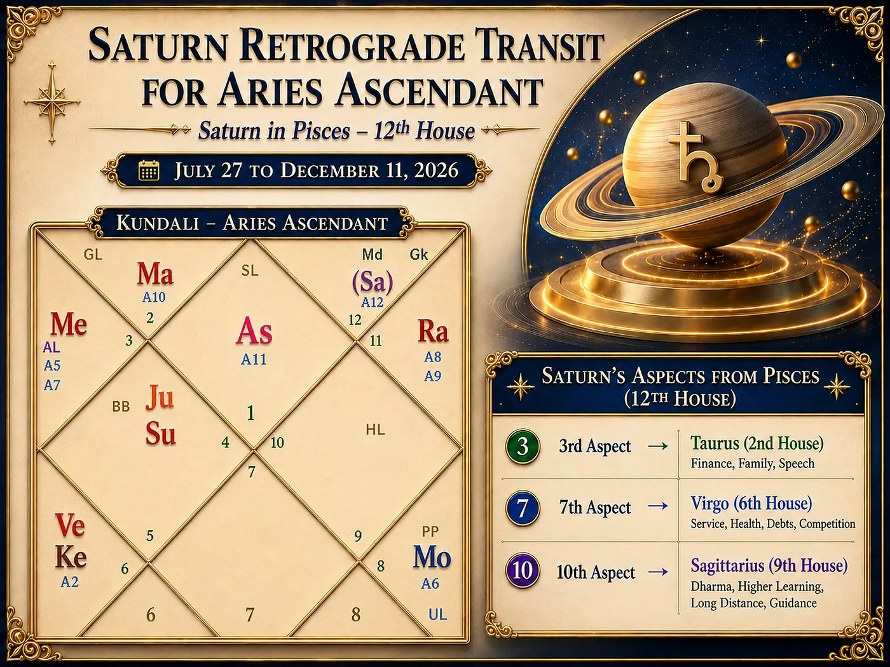
For Aries, Saturn rules the tenth and eleventh houses, connecting this retrograde with career, professional responsibilities, income, recognition, networks, and long-term goals. As Saturn moves retrograde through Pisces in the twelfth house, work may become connected with foreign lands, international organizations, distant offices, travel, or a temporary stay away from the usual place of residence. The twelfth house also governs expenditure, hospitals, isolation, sleep, litigation, and matters that consume time and resources. Medical bills, legal expenses, immigration costs, or travel-related spending may therefore increase. Some people may also feel drawn toward solitude, spiritual practice, pilgrimage, or withdrawal from their usual routine. From the Aries Ascendant, these themes are more likely to manifest through external events, while from the Aries Moon, they may be experienced as disturbed sleep, mental fatigue, uncertainty, or a need for emotional distance.
Saturn's third aspect on the second house brings greater responsibility toward savings, family obligations, speech, and food habits. Its seventh aspect on the sixth house can activate employment concerns, debts, health matters, competition, workplace disagreements, or legal disputes that still require attention. Its tenth aspect on the ninth house influences long-distance travel, higher education, immigration, law, mentors, and personal beliefs. Greater care is advisable regarding fatigue, the feet and legs, and safety while travelling. Injuries or fractures are more likely only when similar indications are also present in the individual birth chart.
Taurus Ascendant and Taurus Moon
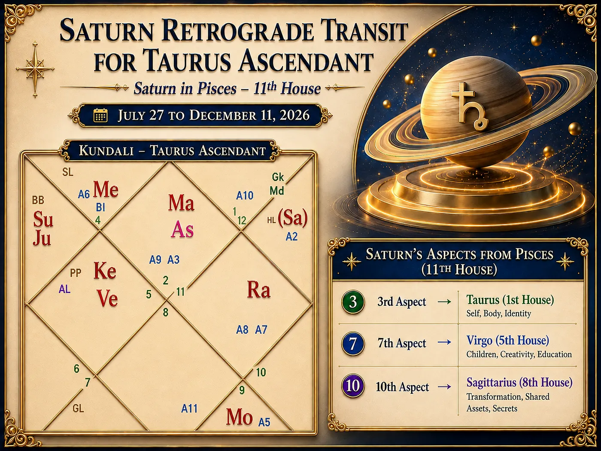
For Taurus, Saturn is a yogakaraka because it rules both the ninth and tenth houses, connecting fortune, dharma, career, authority, and professional achievement. Its retrograde transit through Pisces occurs in the eleventh house, one of the more constructive positions for Saturn, and may bring career advancement, an unexpected promotion, stronger professional influence, or progress toward an important long-term objective. Former friends, colleagues, or senior associates may return and become relevant to future opportunities, although Saturn will also reveal which connections are dependable and which exist only for convenience. Since the eleventh house is the fourth house from the eighth, this transit can also support developments involving ancestral property, inheritance, family assets, or a settlement connected with shared wealth. Those born with Saturn retrograde may experience the transit more naturally, while people with natal Saturn direct may encounter additional review, procedural delays, or temporary obstacles before the expected gain becomes available.
Saturn's third aspect on the first house brings greater seriousness toward health, appearance, identity, and personal responsibility, encouraging Taurus natives to restructure habits that have become unproductive. Its seventh aspect on the fifth house may reopen matters involving children, education, romance, creativity, or speculative decisions, requiring patience rather than impulsive action. Its tenth aspect on the eighth house activates inheritance, taxes, insurance, joint finances, confidential matters, and unresolved emotional experiences that need to be handled with greater maturity. Income and professional gains are possible, but Saturn will demand discipline in the use of those gains and greater selectivity within social and professional networks. From the Taurus Ascendant, these influences may appear through visible developments, while from the Taurus Moon, they may create an internal reassessment of confidence, friendships, ambitions, and emotional security.
Gemini Ascendant and Gemini Moon
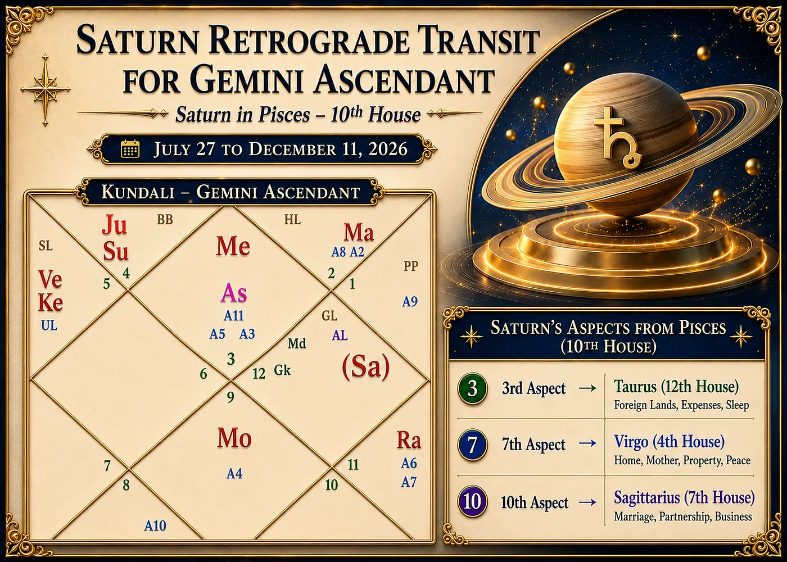
For Gemini, Saturn rules the eighth and ninth houses and moves retrograde through Pisces in the tenth house of profession, authority, reputation, and public responsibility. This is not one of Saturn's easier transits, because the eighth-house lord influences the career house and can create sudden changes, uncertainty, heavier workloads, or dissatisfaction with the existing job. The safer approach during these months is to remain steady rather than resigning impulsively because of temporary pressure, office politics, or frustration with management. Previous responsibilities may return, and some people may need to correct earlier work, rebuild professional credibility, or operate under stricter supervision. Starting a business is possible, but it should be considered only after careful financial and market analysis, since enthusiasm alone may not be sufficient during an unstable period. From the Gemini Ascendant, these results may appear through visible career events, while from the Gemini Moon, the same transit may produce anxiety, indecision, intellectual fatigue, or persistent thoughts about changing professional direction.
Saturn's third aspect on the twelfth house can increase expenditure, disturbed sleep, foreign commitments, hospital visits, or responsibilities that must be managed behind the scenes. Its seventh aspect on the fourth house places pressure on the home, property, vehicles, emotional stability, and especially the health or care requirements of the mother. Some families may need additional assistance at home, nursing support, medical equipment, or hospitalization, particularly when the mother is elderly, or the individual chart already indicates respiratory or chronic health concerns. Saturn's tenth aspect on the seventh house can test marriage, business partnerships, contracts, and professional alliances by exposing unequal responsibilities or unresolved disagreements. This period therefore requires patience in career decisions, practical support for family members, and a willingness to strengthen weak foundations rather than abandoning them under pressure.
Cancer Ascendant and Cancer Moon
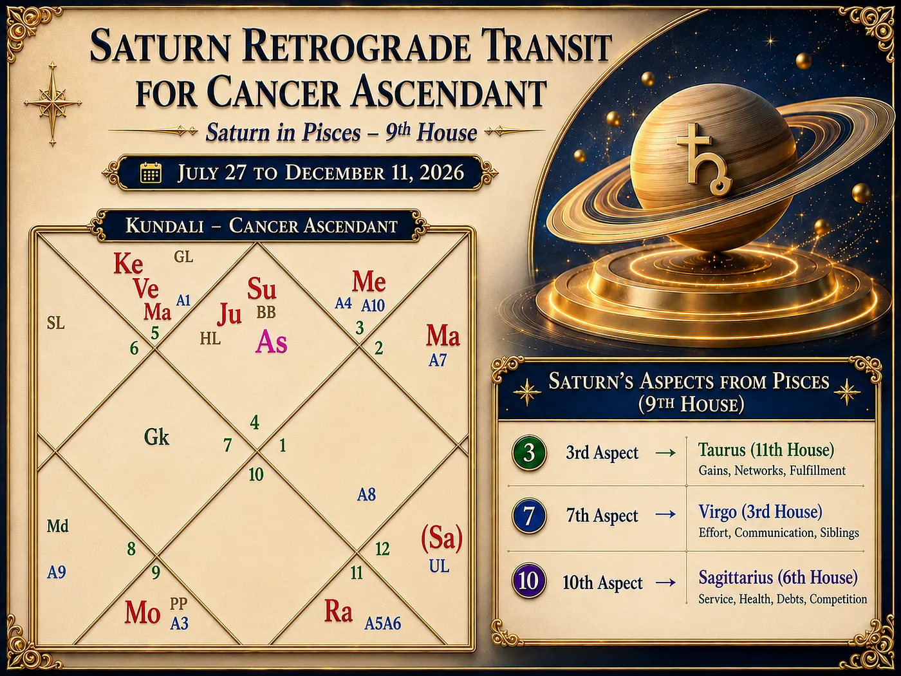
For Cancer, Saturn rules the seventh and eighth houses and retrogrades through Pisces in the ninth house, making this a mixed transit rather than a strongly favorable one. Career instability, restructuring, reduced work, bench periods, or the possibility of a layoff may become visible, but the native is usually likely to receive some indication before the situation becomes final. Those who sense changes within their organization should prepare quietly by strengthening their skills, updating professional connections, and exploring suitable opportunities instead of reacting with fear. The ninth house also governs belief, higher education, law, teachers, father, pilgrimage, and long-distance travel. Old convictions may no longer feel sufficient, and legal, academic, visa, or travel matters can return for review. Senior citizens may use this period constructively for pilgrimage or spiritual travel. The father may need greater caution regarding investments, misleading financial advice, avoidable losses, and health concerns.
Saturn's third aspect on the eleventh house can delay recognition, financial gains, and the completion of major ambitions while bringing older, senior, or foreign associates back into importance. Its seventh aspect on the third house can create difficulty in communication, documentation, writing, short journeys, courage, or relationships with siblings; earlier misunderstandings or matters that were never expressed clearly may now require correction. Its tenth aspect on the sixth house activates employment, service, debts, competition, health, and unresolved conflicts at work. Greater attention may be required toward immunity, digestion, daily routines, and chronic conditions. Questions involving teachers, gurus, father figures, knowledge, and personal principles may also undergo a deeper reassessment. From the Cancer Ascendant, these influences are more likely to appear through external events, while from the Cancer Moon, they may be experienced as anxiety, loss of faith, intellectual uncertainty, or a search for a more mature spiritual and philosophical direction.
Leo Ascendant and Leo Moon
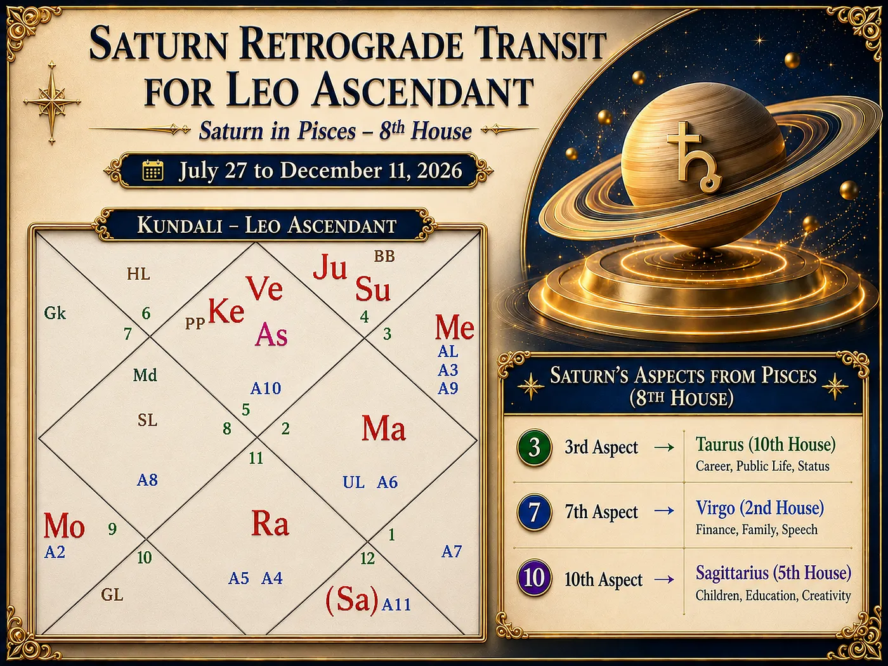
For Leo, Saturn rules the sixth and seventh houses and moves retrograde through Pisces in the eighth house, making this one of the more difficult transits of the cycle. The sixth house brings health concerns, disputes, debts, competition, and legal complications, while the seventh house governs marriage, partnerships, and important personal alliances. As both lordships become connected with the eighth house, hidden tensions can surface, and relationships may reveal their true strength. Some friendships or partnerships may weaken when trust is tested, while genuine connections become easier to recognize. Family disagreements, strain within marriage, or conflict over shared responsibilities may also require careful handling. Health should not be neglected, particularly concerns involving the liver, kidneys, chronic conditions, or unexplained physical weakness. This is not an ideal period to begin unnecessary litigation, escalate arguments, or enter avoidable confrontations. Remaining quiet, collecting facts, and waiting for greater clarity is often wiser than reacting immediately.
Saturn's third aspect on the tenth house can increase professional pressure, delay recognition, or require the native to rebuild authority and reputation through patience and consistent work. Its seventh aspect on the second house places discipline around family finances, savings, speech, inheritance, and the distribution of shared wealth. Matters involving insurance, taxes, wills, or financial planning may require correction or updated documentation. Saturn's tenth aspect on the fifth house can bring responsibility or delay in matters involving children, education, romance, creativity, and speculative investments. Earlier relationships, unfinished creative work, or concerns involving children may return for resolution. The eighth-house transit can also draw the mind toward astrology, psychology, hidden knowledge, or deeper emotional healing, especially where old fears or intimacy wounds remain unresolved. From the Leo Ascendant, these themes may appear through visible events, while from the Leo Moon, they may be experienced as mistrust, emotional heaviness, anxiety, or an intense reassessment of relationships and personal security.
Virgo Ascendant and Virgo Moon
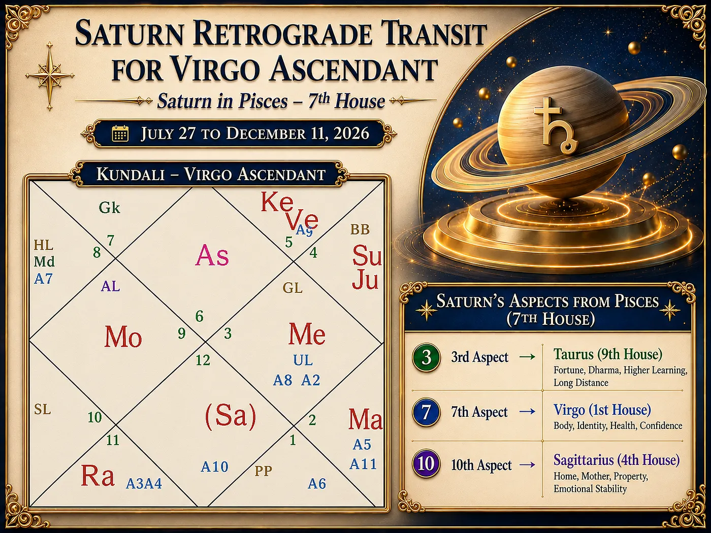
For Virgo, Saturn rules the fifth and sixth houses and retrogrades through Pisces in the seventh house, bringing marriage, committed relationships, business alliances, and contractual responsibilities into focus. Since the fifth lord connects romance with the house of partnership, some natives may move toward engagement or marriage during this period. However, decisions should be based on long-term compatibility and practical support rather than emotional urgency, especially when the relationship does not follow conventional expectations. Existing marriages may require a clearer division of duties, while unresolved disagreements can return for discussion. The transit may also support business travel or the formation of a professional partnership, although the initial stage could involve considerable expenditure and administrative effort.
Saturn's third aspect on the ninth house can slow higher education, long-distance travel, legal processes, or matters involving teachers and mentors, particularly when something from the past remains incomplete. Its seventh aspect on the Ascendant places greater responsibility on personal health, confidence, conduct, and the way the native relates to others. Saturn's tenth aspect on the fourth house can bring repairs, relocation, property responsibilities, domestic pressure, or duties involving the mother and elderly family members. Previous business agreements or relationship commitments may also return for reconsideration. From the Virgo Ascendant, these influences are more likely to appear through marriage, travel, business, home, or health developments, while from the Virgo Moon, they may produce greater caution, emotional distance, or serious reflection about whom to trust and what kind of partnership can endure.
Libra Ascendant and Libra Moon
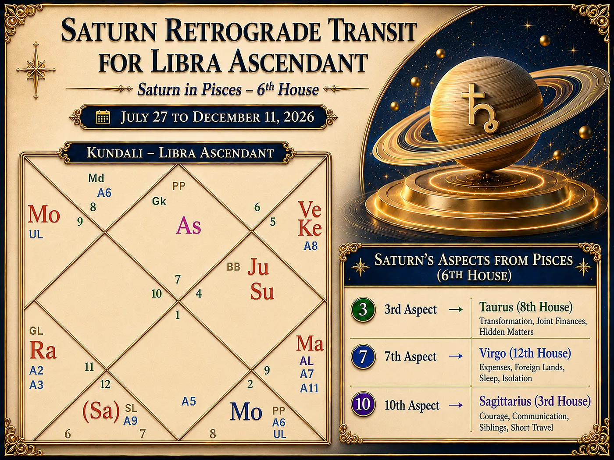
For Libra, Saturn is a yogakaraka because it simultaneously governs the fourth-house kendra and the fifth-house trikona. Its retrograde movement through Pisces activates the sixth house, an upachaya in which Saturn can produce exceptionally constructive results through discipline, persistence, and the gradual defeat of obstacles. Overall, this is an excellent transit for employment and professional recovery. Those seeking work may secure a suitable position, while people facing instability, competition, or a difficult professional phase may regain control of their circumstances. The workload can become demanding, and recognition may initially lag behind effort, but the responsibilities accepted during this period can strengthen professional credibility and prepare the native for advancement after Saturn resumes direct motion. A capable spouse or business partner may contribute meaningfully to commercial expansion or help establish a new source of growth. Foreign-linked work, international assignments, or travel may also become relevant. Those born with Saturn retrograde may adjust to this phase more naturally, whereas people with natal Saturn direct may first experience a substantial reorganization of work, health routines, or responsibilities before the benefits become fully visible.
Saturn's third aspect on the eighth house can bring old relationships, former alliances, unresolved rivalries, shared financial concerns, inheritance, taxes, insurance, confidential matters, or emotionally complicated situations back into consideration. Their return should not automatically be viewed as negative. Retrogression often brings incomplete matters back because they require a more mature decision, a clearer boundary, or a final resolution. Saturn's seventh aspect on the twelfth house can increase expenditure connected with litigation, lawyers, court filings, settlements, documentation, medical treatment, hospitals, foreign travel, or institutional responsibilities. Legal matters may therefore demand both financial planning and procedural discipline. Its tenth aspect on the third house places greater responsibility on communication, documentation, courage, technical skills, short journeys, and relationships with siblings, neighbors, or colleagues. Clear records and measured communication will be especially valuable when workplace tensions or older disputes reappear. From the Libra Ascendant, these results are more likely to manifest through employment, partnerships, health, travel, finances, and legal matters. From the Libra Moon, the same transit may initially create mental pressure or recurring worry, but it can ultimately produce greater resilience, practical clarity, and control over situations that had remained unresolved.
Scorpio Ascendant and Scorpio Moon
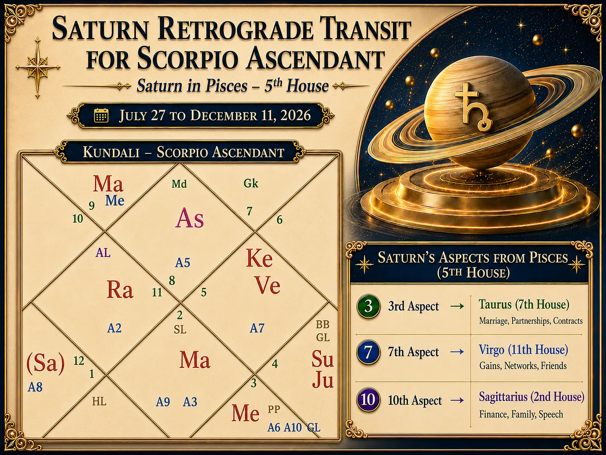
For Scorpio, Saturn governs the third and fourth houses and moves retrograde through Pisces in the fifth house, bringing intelligence, education, children, romance, creativity, judgment, and investment decisions into focus. This placement has an important internal logic because the fifth house is the third house counted from the third. Saturn therefore strengthens matters developed through sustained effort, technical ability, communication, enterprise, and patient practice. An earlier creative idea, business concept, educational plan, or unfinished project may return because it now requires greater structure and maturity. Retrogression, however, does not support decisions made from excitement alone. Money placed into an untested venture, speculative opportunity, or emotionally attractive project may become difficult to recover, so every investment should be supported by careful analysis. As the fourth lord moves through the fifth house, family resources may also be directed toward children, education, relocation, or knowledge that creates lasting value. Some parents may spend substantially on a child's higher education abroad, and in certain charts the child may eventually establish a longer life in a distant or colder region.
Saturn's third aspect on the seventh house places marriage, committed relationships, clients, contracts, and business partnerships under serious examination. A former partner, client, agreement, or romantic connection may return because an obligation, decision, or conversation was left incomplete. The purpose is not always reunion. Sometimes the transit clarifies whether the relationship has enough substance to continue. Existing couples should not allow temporary frustration to destroy a bond that has been built through genuine commitment. Saturn's seventh aspect on the eleventh house makes gains increasingly dependent on disciplined planning, dependable networks, and realistic expectations rather than shortcuts or social influence. Older friendships and professional associations may also be reconsidered when the exchange of trust or support has become unequal.
Saturn's tenth aspect on the second house demands greater order in savings, family responsibilities, speech, food habits, and the use of accumulated wealth. Investments that create education, stability, or a meaningful legacy are more suitable than expenditure driven only by pleasure or status. Children may require additional patience, while students, teachers, and creative professionals may experience slower progress that ultimately improves depth and concentration. From the Scorpio Ascendant, these themes are more likely to appear through children, education, investment, relationships, contracts, and income. From the Scorpio Moon, they may be experienced as concern about love, recognition, creative confidence, or the future of the family. The deeper purpose of this transit is to distinguish enduring value from emotional impulse and to protect commitments that deserve time, responsibility, and intelligent effort.
Sagittarius Ascendant and Sagittarius Moon
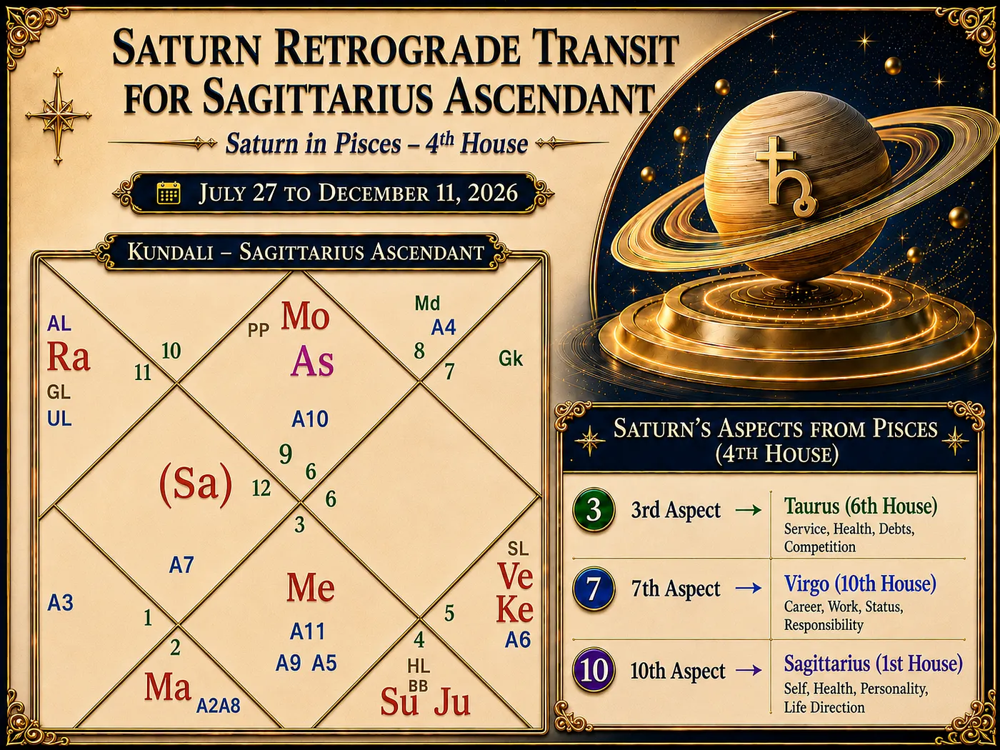
For Sagittarius, Saturn governs the second and third houses and moves retrograde through Pisces in the fourth house, bringing family security, domestic stability, property, vehicles, parental responsibilities, and emotional foundations under review. This is not an especially comfortable transit because the second lord connects family wealth and obligations with the home, while the third lord introduces effort, paperwork, movement, and repeated practical demands. Household equipment may require repair or replacement, property maintenance may become expensive, and the health or care needs of the mother, father, or another elderly relative may require greater attention. Old emotional patterns connected with childhood or family life may also become more visible, especially for Sagittarius Moon natives. Property purchases, land transactions, renovations, and ownership arrangements should therefore be approached with patience. Title records, legal rights, structural conditions, financing terms, and family claims should be verified independently before money is committed. When natal Saturn is direct, postponing a major transaction until the transit becomes direct may be sensible when circumstances permit, since retrogression can reveal complications that were not apparent at the beginning.
Saturn's third aspect on the sixth house can revive employment pressure, debt, health concerns, workplace conflict, or routines that were previously managed without being fully corrected. Its seventh aspect on the tenth house places professional duties in direct tension with domestic responsibilities, creating a period in which career demands and family needs may compete for the same time and energy. Earlier assignments, public responsibilities, or unresolved concerns about professional standing may return and require a more disciplined response. Saturn's tenth aspect on the Ascendant makes the transit personally demanding by compelling the native to reconsider health, self-discipline, confidence, and the structure of daily life. From the Sagittarius Ascendant, these effects may appear through property, parents, employment, finances, or visible changes in living conditions. From the Sagittarius Moon, they may be experienced as emotional heaviness, reduced peace of mind, or uncertainty about where genuine security lies. Overall, this is not a favorable transit for comfort or ease, but it can expose weaknesses in the foundations of home and career so that they can be corrected with greater foresight, legal clarity, and maturity.
Capricorn Ascendant and Capricorn Moon
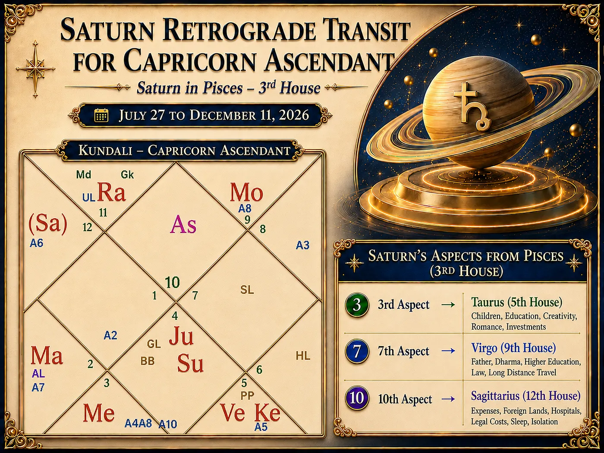
For Capricorn, Saturn governs both the first and second houses and moves retrograde through Pisces in the third house, an upachaya associated with effort, communication, skill, courage, travel, and the ability to convert intention into action. Because the ascendant lord is moving through a house that improves through disciplined engagement, this is a broadly favorable transit for both Capricorn Ascendant and Capricorn Moon. It can produce frequent journeys, a professional transfer, a change of residence, or an opportunity that takes the native far from the place of birth. Such movement may ultimately be beneficial, although the first stage can involve practical difficulty as the individual adjusts to a new environment, reorganizes domestic responsibilities, and decides whether the family should relocate. Retrogression can also reverse an earlier decision or revive an option that appeared closed. The final outcome depends on Saturn's condition in the natal chart, but the transit generally rewards persistence, technical competence, careful communication, and the willingness to build capability through repeated effort.
Saturn's third aspect on the fifth house brings seriousness to education, children, romance, creativity, and investment judgment. Students may initially find certain subjects difficult to absorb, but concentration and systematic revision can convert that difficulty into durable understanding. An older creative idea, writing project, teaching interest, or intellectual pursuit may return and acquire a stronger structure. Saturn's seventh aspect on the ninth house can reopen matters involving higher education, law, teachers, long-distance travel, or spiritual direction, requiring the native to examine whether existing beliefs are supported by experience and discipline. Its tenth aspect on the twelfth house connects effort with foreign countries, institutional environments, expenditure, solitude, and the deeper mental patterns that shape confidence. From the Capricorn Ascendant, these results are more likely to appear through travel, relocation, work, education, and visible changes in lifestyle. From the Capricorn Moon, the same transit may produce fear of failure, mental pressure, or uncertainty before an important decision. The correct response is neither haste nor avoidance, but calm execution. Saturn strengthens this period by teaching the native to replace anxiety with method, scattered activity with focus, and temporary disruption with a more durable direction.
Aquarius Ascendant and Aquarius Moon
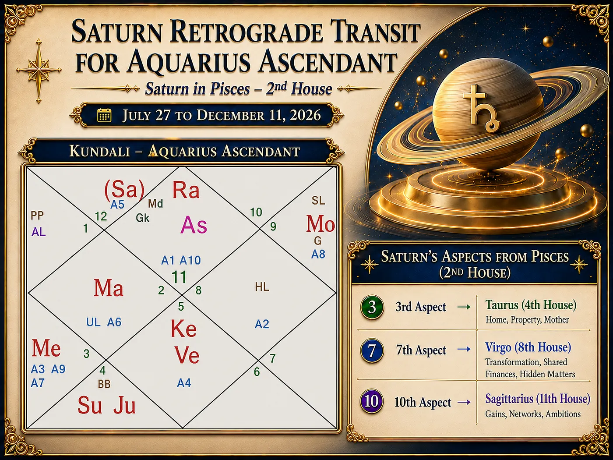
For Aquarius, Saturn governs the first and twelfth houses and moves retrograde through Pisces in the second house, placing personal security, accumulated wealth, family obligations, speech, food habits, and long term financial decisions under review. Because the Ascendant lord occupies the house of stored resources, this can be a constructive transit for both Aquarius Ascendant and Aquarius Moon, provided money is handled with restraint rather than confidence alone. Capital may become committed for a long period through property, a business project, or a substantial loan, so liquidity and exit conditions must be evaluated before funds are released. Saturn's third aspect on the fourth house directly connects financial decisions with land, housing, vehicles, the mother, and emotional security. A property may appear attractive yet contain legal, regulatory, construction, or ownership risks that are not immediately visible. Established builders, verified approvals, independent legal review, and realistic completion schedules become essential. The same caution applies to lending money within personal networks. Silence and measured language are also valuable because retrograde Saturn in the second house can turn a careless statement into a lasting family or financial complication.
Saturn's seventh aspect on the eighth house brings shared assets, inheritance, insurance, taxes, hidden liabilities, and deeply rooted financial fears into consideration. The purpose is not merely to create anxiety, but to expose where security has been built on assumptions rather than evidence. Its tenth aspect on the eleventh house can produce gains through disciplined service, mature networks, and carefully structured exits from professional life. Saturn's movement through the house of food also calls for greater attention to digestion, food quality, and avoidable illness from careless eating. From the Aquarius Ascendant, these themes may appear through visible financial commitments, property decisions, family responsibilities, retirement, or health expenses. From the Aquarius Moon, they may be experienced as concern about stability, inheritance, family expectations, or the fear of losing control over accumulated resources. The deeper intelligence of this transit lies in replacing rigid ideas about security with evidence-based planning, disciplined speech, and financial structures capable of surviving uncertainty.
Pisces Ascendant and Pisces Moon
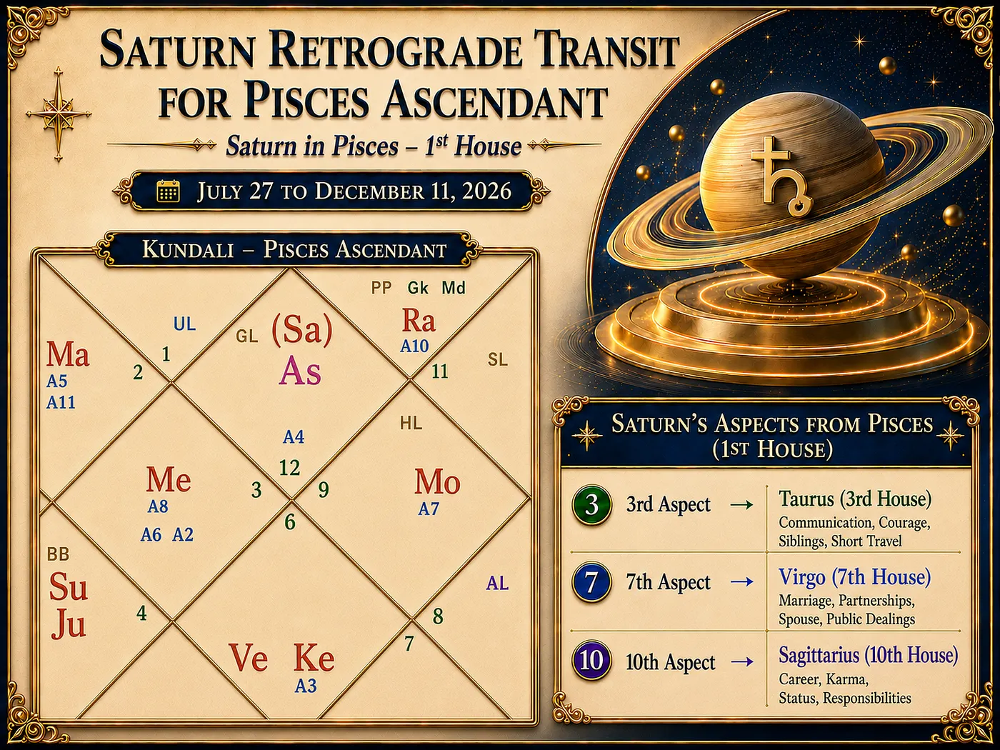
For Pisces, Saturn rules the eleventh and twelfth houses and moves retrograde through the first house, directly affecting health, confidence, judgment, identity, and the ability to manage pressure. This is not a favorable transit for either Pisces Ascendant or Pisces Moon, because the twelfth lord brings expenditure, hospitals, disturbed sleep, isolation, and responsibilities performed for others into the native's immediate experience. Retrogression makes the period corrective. Problems that were ignored, postponed, or emotionally suppressed can return until they are addressed properly. A family member may require medical treatment, repeated hospital visits, financial support, transportation, or regular care, and the native may become physically exhausted while attending to those obligations. For a Pisces Moon, the effect can be stronger because Saturn is passing directly over the Moon during the central phase of Sade Sati. Fear, pessimism, loneliness, and anxiety may become disproportionate to the actual situation, especially when sleep is poor, and the native feels responsible for everyone. Counseling, meditation, prayer, guidance from a trustworthy mentor, and regular contact with supportive people should be taken seriously during this period. Seeking help is not weakness. It is the most intelligent way to prevent temporary pressure from damaging confidence and mental stability.
Saturn's third aspect on the third house can revive communication problems with siblings and create hesitation in writing, speaking, learning, and everyday decision-making. Courage has to be rebuilt through consistent action rather than emotional confidence. Its seventh aspect on the seventh house places marriage, contracts, and business partnerships under strain. A partner may become cold, emotionally distant, or unwilling to provide reassurance, forcing the native to confront the actual condition of the relationship. Strong bonds can survive through honesty and responsibility, while fragile relationships may expose deeper incompatibility. Saturn's tenth aspect on the tenth house directly affects career, authority, reputation, and public image. Professional goals may require serious correction, and the native must take responsibility for how their conduct is perceived by employers, clients, colleagues, and the wider public. Avoiding accountability, neglecting duties, or responding emotionally can damage credibility, while disciplined work and mature behavior can gradually restore respect. The transit may feel heavy in both body and mind, but practices such as meditation, yoga, disciplined self-study, and appropriate fasting when medically suitable can help the native regain control. Retrograde Saturn is asking Pisces to correct weaknesses in personal judgment, relationships, professional conduct, and emotional resilience before forward movement becomes possible.
Conclusion
Saturn's retrograde movement through Pisces does not produce the same outcome for every sign. Its results depend on Saturn's functional lordship, the house it occupies, and the houses receiving its third, seventh, and tenth aspects. For some signs, this period can support employment, professional growth, travel, partnership, or the revival of an earlier opportunity. For others, it may bring unresolved concerns involving health, family, property, finances, litigation, relationships, or career back into focus. The Ascendant shows where these developments are more likely to manifest externally, while the Moon sign describes their mental and emotional impact. The final result must still be judged from the complete birth chart, including natal Saturn, its dispositor, planetary periods, and the strength of the houses involved.
From July 27 to December 11, 2026, Saturn asks each sign to reconsider a different structure of life. Matters returning during retrogression usually require correction, closure, or a more mature decision. Saturn does not reward panic, avoidance, or impulsive action. It favors patience, accurate judgment, disciplined effort, and the willingness to address what was previously left incomplete. The real value of this transit lies in using the retrograde period to build a stronger foundation before Saturn resumes direct motion.